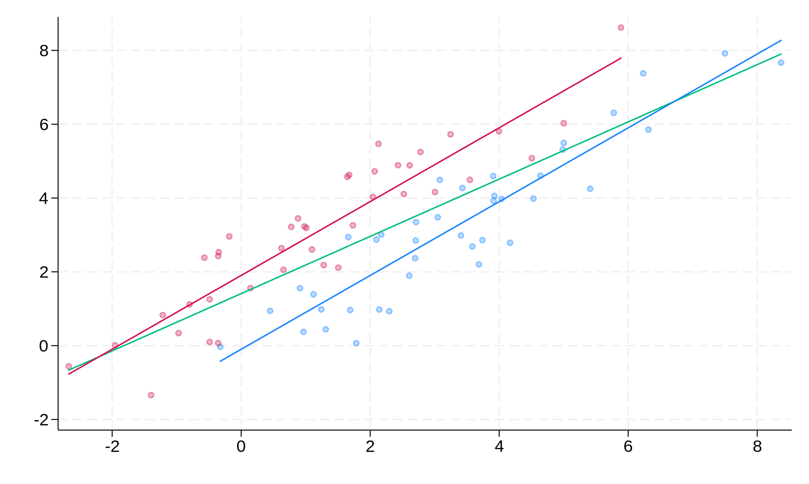

Integrantes: máximo 3 por grupo.
Extensión: máximo 12 carillas (hoja A4, 12pts, etc.). La página 13 no se corrige.
Copia o plagio: trabajo desaprobado, grupo fuera del régimen de promoción.
Entrega TP1: Lunes 06 de Octubre (hasta las 12 del mediodía).
Presentación TP2: Viernes 03 de Octubre.
Redacción: sigan la estructura del enunciado.
Presentación: tablas bien descriptas y ordenadas.
Calidad: papers de calidad guían hacia otras publicaciones útiles.
Actualidad: no desentenderse del estado actual de la discusión.
Citas: citar correctamente a los autores y en un mismo formato.
Metodología:
The Real Exchange Rate and Economic Growth (Dani Rodrik. LINK)
Argentina (LINK)
Base de datos LINK
Verificar que archivo fuente de datos posee los nombres de las variables en minúscula (y en caso que se requiera un espacio utilizar el guión bajo, ej.: gdp_growth) en la primera fila.
Verificar el formato numérico de las variables y que los separadores de decimales coincidan en ambos programas (set dp {comma|period} [, permanently]).
Se puede importar directamente desde Excel o se puede guardar el archivo como .csv delimitado por comas –o .txt delimitado por tabulaciones-. Excel avisa que el formato no soporta hojas múltiples, esto es lo que se está buscando.
. import excel using datos_WB.xlsx, first sheet(1) clear
(8 vars, 78 obs)
. label var gdp_pc2021 "PIB per capita"
. label var credit_ps "Credito al Sector Privado (%PIB)"
. label var inv "Inversion (%PIB)"
. label var exports "Exportaciones (%PIB)"
. label var imports "Importaciones (%PIB)"
. sum
Variable | Obs Mean Std. dev. Min Max
-------------+---------------------------------------------------------
cname | 0
year | 78 2016 3.765875 2010 2022
ccode | 0
gdp_pc2021 | 78 37655.78 13920.48 16709.39 55183.63
credit_ps | 73 91.91709 38.87778 12.69011 184.5952
-------------+---------------------------------------------------------
inv | 78 19.44815 3.405743 14.19905 26.75266
exports | 78 25.23548 8.03226 10.70565 37.90399
imports | 78 25.28862 8.182954 11.78057 39.34763
. save wb_data.dta, replace
file wb_data.dta saved
. table (var) (result), ///
> statistic(n gdp_pc2021 credit_ps inv exports imports) ///
> statistic(mean gdp_pc2021 credit_ps inv exports imports) ///
> statistic(sd gdp_pc2021 credit_ps inv exports imports) ///
> statistic(min gdp_pc2021 credit_ps inv exports imports) ///
> statistic(max gdp_pc2021 credit_ps inv exports imports)
-------------------------------------------------------------------------------------------------------------------------------
| Number of nonmissing values Mean Standard deviation Minimum value Maximum value
---------------------------------+---------------------------------------------------------------------------------------------
PIB per capita | 78 37655.78 13920.48 16709.39 55183.63
Credito al Sector Privado (%PIB) | 73 91.91709 38.87778 12.69011 184.5952
Inversion (%PIB) | 78 19.44815 3.405743 14.19905 26.75266
Exportaciones (%PIB) | 78 25.23548 8.03226 10.70565 37.90399
Importaciones (%PIB) | 78 25.28862 8.182954 11.78057 39.34763
-------------------------------------------------------------------------------------------------------------------------------
.
. collect dims
Collection dimensions
Collection: Table
-----------------------------------------
Dimension No. levels
-----------------------------------------
Layout, style, header, label
cmdset 1
colname 5
command 1
result 5
statcmd 5
var 5
Style only
border_block 4
cell_type 4
-----------------------------------------
. collect label list result
Collection: Table
Dimension: result
Label: Result
Level labels:
count Number of nonmissing values
max Maximum value
mean Mean
min Minimum value
sd Standard deviation
.
. collect label levels result count "Obs." ///
> mean "Media" ///
> sd "Desvio estandar" ///
> min "Minimo" ///
> max "Maximo", modify
.
. collect preview
-------------------------------------------------------------------------------------------
| Obs. Media Desvio estandar Minimo Maximo
---------------------------------+---------------------------------------------------------
PIB per capita | 78 37655.78 13920.48 16709.39 55183.63
Credito al Sector Privado (%PIB) | 73 91.91709 38.87778 12.69011 184.5952
Inversion (%PIB) | 78 19.44815 3.405743 14.19905 26.75266
Exportaciones (%PIB) | 78 25.23548 8.03226 10.70565 37.90399
Importaciones (%PIB) | 78 25.28862 8.182954 11.78057 39.34763
-------------------------------------------------------------------------------------------
.
. * Exportar a Excel
. collect export "stats.xlsx", replace
(collection Table exported to file stats.xlsx)
. import excel using datos_WB.xlsx, first sheet(2) clear
(2 vars, 6 obs)
. save meta.dta, replace
file meta.dta saved
import delimited using datos_WB.csv, clear
export excel using data.xlsx, firstrow(var) sheet(1, replace)
export delimited data.txt, replace
. use wb_data.dta, clear
. merge m:1 ccode using meta.dta, keep(match master) nogen
Result Number of obs
-----------------------------------------
Not matched 0
Matched 78
-----------------------------------------
. collapse gdp_pc2021 (max) expo_max = exports (p50) impo_p50 = imports, by(region)
+---------------------------------------------------------------+
| region gdp_~2021 expo_max impo_p50 |
|---------------------------------------------------------------|
1. | Europe & Central Asia 50935.996 36.630293 30.416032 |
2. | Latin America & Caribbean 24375.559 37.903994 15.350952 |
+---------------------------------------------------------------+
append une bases de datos (una debajo de la otra, agrega observaciones).. use wb_data.dta, clear
. keep ccode year exports
. drop if year < 2018
(48 observations deleted)
. rename exports expo
. reshape wide expo, i(ccode) j(year)
(j = 2018 2019 2020 2021 2022)
Data Long -> Wide
-----------------------------------------------------------------------------
Number of observations 30 -> 6
Number of variables 3 -> 6
j variable (5 values) year -> (dropped)
xij variables:
expo -> expo2018 expo2019 ... expo2022
-----------------------------------------------------------------------------
+-------------------------------------------------------------------+
| ccode expo2018 expo2019 expo2020 expo2021 expo2022 |
|-------------------------------------------------------------------|
1. | ARG 14.436686 17.924878 16.605414 17.996588 16.299562 |
2. | BRA 14.634999 14.122919 16.453552 19.561677 20.045537 |
3. | CHL 28.529045 27.843268 31.30377 31.979668 35.670725 |
4. | FRA 31.713667 31.592055 27.327736 30.034994 34.6864 |
5. | GBR 31.580111 31.63478 29.691991 29.597313 33.42794 |
6. | ITA 31.353554 31.60242 29.432277 32.069233 36.630293 |
+-------------------------------------------------------------------+
. reshape long expo, i(ccode) j(year)
(j = 2018 2019 2020 2021 2022)
Data Wide -> Long
-----------------------------------------------------------------------------
Number of observations 6 -> 30
Number of variables 6 -> 3
j variable (5 values) -> year
xij variables:
expo2018 expo2019 ... expo2022 -> expo
-----------------------------------------------------------------------------
+--------------------------+
| ccode year expo |
|--------------------------|
1. | ARG 2018 14.436686 |
2. | ARG 2019 17.924878 |
3. | ARG 2020 16.605414 |
4. | ARG 2021 17.996588 |
5. | ARG 2022 16.299562 |
6. | BRA 2018 14.634999 |
7. | BRA 2019 14.122919 |
8. | BRA 2020 16.453552 |
9. | BRA 2021 19.561677 |
10. | BRA 2022 20.045537 |
+--------------------------+
Varias unidades (N) de cross-section en el tiempo (doble variabilidad).
Efectos no observables que varian solo por individuo.
Si no los incluimos: sesgo por variable omitida.
\begin{equation} y_{it} = x’_{it} \beta + \mu_i + \epsilon_{it} \end{equation}
\begin{equation} y_{it} = \underbrace{\mu_i + \beta_1} + \beta_2 x_{2,it} + … + \beta_K x_{K,it} + \epsilon_{it} \end{equation}

. use wb_data.dta, clear
. egen id = group(ccode)
. order id year
. tsset id year, yearly
Panel variable: id (strongly balanced)
Time variable: year, 2010 to 2022
Delta: 1 year
. gen gdp_gr = ((gdp_pc2021 / L.gdp_pc2021) - 1) * 100
(6 missing values generated)
. egen open = rowtotal(exports imports)
. label var gdp_gr "Crecimiento (PIBpc)"
. label var open "Apertura comercial (%PIB)"
. * esttab
. xtreg gdp_gr credit_ps inv open, fe rob
Fixed-effects (within) regression Number of obs = 67
Group variable: id Number of groups = 6
R-squared: Obs per group:
Within = 0.2602 min = 7
Between = 0.0026 avg = 11.2
Overall = 0.0868 max = 12
F(3, 5) = 103.08
corr(u_i, Xb) = -0.8116 Prob > F = 0.0001
(Std. err. adjusted for 6 clusters in id)
------------------------------------------------------------------------------
| Robust
gdp_gr | Coefficient std. err. t P>|t| [95% conf. interval]
-------------+----------------------------------------------------------------
credit_ps | -.1127859 .0304056 -3.71 0.014 -.190946 -.0346258
inv | .4062065 .1992638 2.04 0.097 -.1060174 .9184304
open | .2287612 .0308389 7.42 0.001 .1494872 .3080352
_cons | -8.756356 4.634822 -1.89 0.117 -20.67054 3.157833
-------------+----------------------------------------------------------------
sigma_u | 2.9609785
sigma_e | 3.3275459
rho | .44190592 (fraction of variance due to u_i)
------------------------------------------------------------------------------
. eststo: xtreg gdp_gr credit_ps inv, fe rob
Fixed-effects (within) regression Number of obs = 67
Group variable: id Number of groups = 6
R-squared: Obs per group:
Within = 0.1822 min = 7
Between = 0.2697 avg = 11.2
Overall = 0.0067 max = 12
F(2, 5) = 8.46
corr(u_i, Xb) = -0.9287 Prob > F = 0.0249
(Std. err. adjusted for 6 clusters in id)
------------------------------------------------------------------------------
| Robust
gdp_gr | Coefficient std. err. t P>|t| [95% conf. interval]
-------------+----------------------------------------------------------------
credit_ps | -.1226118 .0463477 -2.65 0.046 -.2417524 -.0034712
inv | .6964868 .203373 3.42 0.019 .1736998 1.219274
_cons | -1.654366 5.516853 -0.30 0.776 -15.83589 12.52716
-------------+----------------------------------------------------------------
sigma_u | 5.042625
sigma_e | 3.4687726
rho | .67879768 (fraction of variance due to u_i)
------------------------------------------------------------------------------
(est7 stored)
. eststo: xtreg gdp_gr credit_ps inv open, fe rob
Fixed-effects (within) regression Number of obs = 67
Group variable: id Number of groups = 6
R-squared: Obs per group:
Within = 0.2602 min = 7
Between = 0.0026 avg = 11.2
Overall = 0.0868 max = 12
F(3, 5) = 103.08
corr(u_i, Xb) = -0.8116 Prob > F = 0.0001
(Std. err. adjusted for 6 clusters in id)
------------------------------------------------------------------------------
| Robust
gdp_gr | Coefficient std. err. t P>|t| [95% conf. interval]
-------------+----------------------------------------------------------------
credit_ps | -.1127859 .0304056 -3.71 0.014 -.190946 -.0346258
inv | .4062065 .1992638 2.04 0.097 -.1060174 .9184304
open | .2287612 .0308389 7.42 0.001 .1494872 .3080352
_cons | -8.756356 4.634822 -1.89 0.117 -20.67054 3.157833
-------------+----------------------------------------------------------------
sigma_u | 2.9609785
sigma_e | 3.3275459
rho | .44190592 (fraction of variance due to u_i)
------------------------------------------------------------------------------
(est8 stored)
. esttab using regs_cre.csv, se bracket r2 star(* 0.10 ** 0.05 *** 0.01) label replace
(output written to regs_cre.csv)
. * etable + collect (desde Vesrsion 17)
. qui xtreg gdp_gr credit_ps inv, fe vce(robust)
. estimates store m1
. qui xtreg gdp_gr credit_ps inv open, fe vce(robust)
. estimates store m2
.
. etable, estimates(m1 m2) column(index) varlabel ///
> cstat(_r_b, nformat(%9.3f)) ///
> cstat(_r_se, nformat(%9.3f) sformat("(%s)")) ///
> showstars stars(.1 "*" .05 "**" .01 "***", attach(_r_b)) showstarsnote ///
> mstat(N, label("Obs.")) mstat(r2_o, label("R^2 (overall)")) ///
> export("resultados_FE.xlsx", sheet("FE", replace) modify)
-------------------------------------------------------
1 2
-------------------------------------------------------
Credito al Sector Privado (%PIB) -0.123 ** -0.113 **
(0.046) (0.030)
Inversion (%PIB) 0.696 ** 0.406 *
(0.203) (0.199)
Apertura comercial (%PIB) 0.229 ***
(0.031)
Intercept -1.654 -8.756
(5.517) (4.635)
Obs. 67 67
R^2 (overall) 0.01 0.09
-------------------------------------------------------
*** p<.01, ** p<.05, * p<.1
(collection ETable exported to file resultados_FE.xlsx)
.
. collect stars, result
. collect export "resultados_FE.xlsx", sheet("FE_v2", replace) modify
(collection ETable exported to file resultados_FE.xlsx)
sort ordena las observaciones de acuerdo a una variable determinada en forma creciente.gsort –edad ordena las observaciones de acuerdo a la variable edad en forma decreciente.order ordena la lista de variables.move cambia la posición de dos variables en la lista de variables.cd cambia de directorio.use carga una base de datos.save guarda una base de datos.clear limpia la memoria .drop elimina variables u observaciones.keep mantiene ciertas variables u observaciones.rename renombra variables.summarize estadísticas descriptivas.pwcorr matrices de correlación.corrgram muestra la autocorrelación y la autocorrelación parcial.regress regresión por mínimos cuadrados ordinarios.label incorpora etiquetas a las variables.predict genera valores ajustados, residuos, etc.table crear tablas.collect conjunto de comandos que permite crear tablas personalizadas (a partir de la Version 17).esttab editar la salida de una regresión.